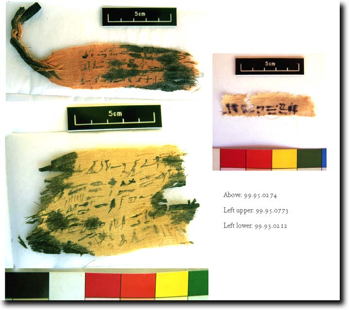

Re-use of TT99 in the Ptolemaic and Roman periods
 Material from the Graeco-Roman period is sparse and not clearly identifiable. The majority of burials in Thebes at this date are large groups of wrapped mummies, usually not in coffins, frequently unidentified, and with no funeral goods.
Material from the Graeco-Roman period is sparse and not clearly identifiable. The majority of burials in Thebes at this date are large groups of wrapped mummies, usually not in coffins, frequently unidentified, and with no funeral goods.
I give here four areas of material. It is quite possible that some of this material could be intrusive, unrelated to the tomb. There is a limited amount of pottery, for example this fine amphora shown at the right, which is Ptolemaic in date.
Work is still proceeding on the human remains, and it is unlikely that we will ever be able to date damaged mummies to particular periods. However, study of the bones from inside the tomb suggested that there could have been 40-50 bodies there. This may of course just encompass the Third Intermediate Period burials, but with six burial chambers in the tomb, capable of perhaps accommodating some 20 bodies, it does seem likely that there could have been some later interments.
One piece of evidence related to this is a couple of recesses in the front room of the tomb which are not related to its original design (marked in red in the section below). These could be loculi, places used for placing bodies in Graeco-Roman times. Obviously this would not cover all the bodies, but it does point to reuse at that date.

The last piece of evidence are three mummy bandages, shown below. These have yet to be studied, but they have all the appearance of bandages bearing Book of the Dead texts, a practice attested in the Graeco-Roman period.
I think there is little doubt that there is some evidence for use in this period, but it is not very focused!

© Nigel Strudwick 1997-2016